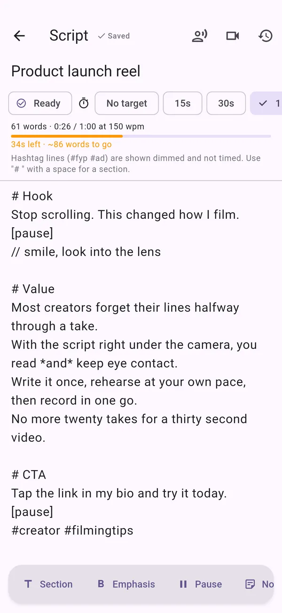
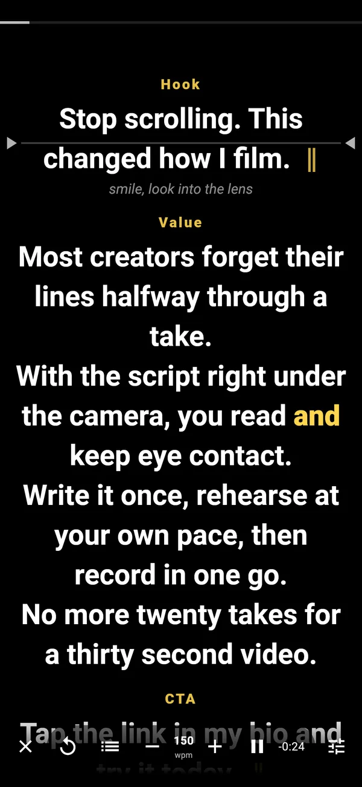
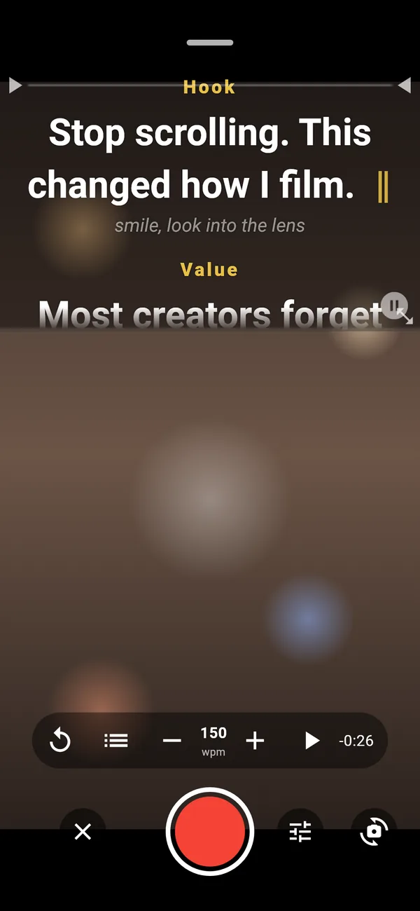
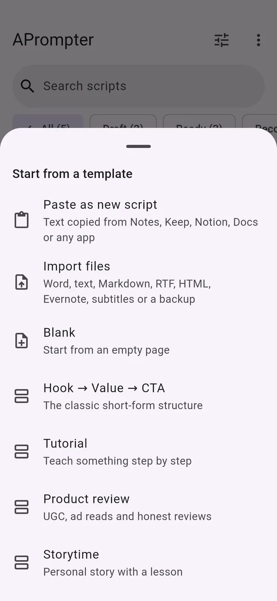
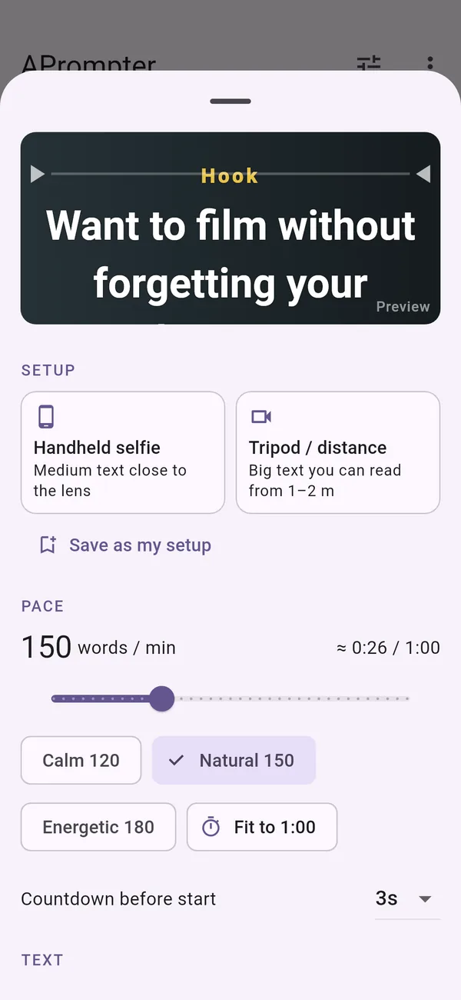
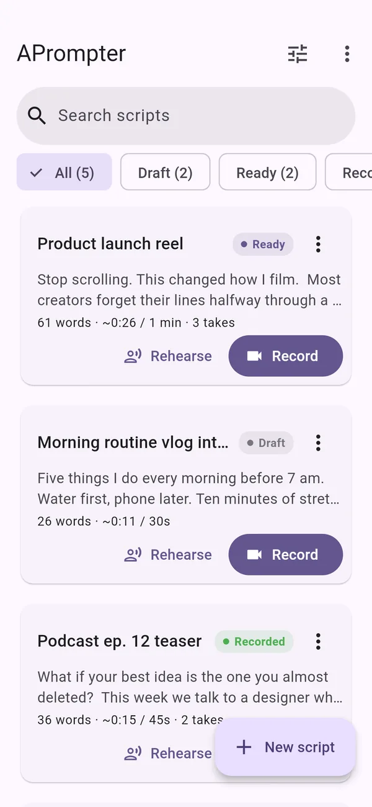

Read your script while you film.
The text scrolls right under the camera, so you say every line and keep eye contact. For Reels, TikTok, Shorts and YouTube.
Free for one script, with every feature. No account, no ads, no tracking.
How it works
Write it, find your pace, film it in one go
-

Write
Pick a target length and the timer shows whether your words fit. Mark sections, emphasis and pauses as you go.
-

Rehearse
Read it out loud at a pace set in words per minute. Afterwards APrompter suggests the pace you actually spoke at.
-

Record
Film with the text under the lens. Review each take, keep it or go again from the section you choose.
Features
Made for how creators actually film
Bring scripts from any app
Share a note from Apple Notes, Google Keep, Samsung Notes, Notion or Docs straight to APrompter, paste it in one tap, or open a file. Headings become sections and bold becomes emphasis.
- Share to APrompter from the share sheet, or Open with on a file
- Paste as new script cleans up text copied from Docs, Word and chats
- Save as text file to send a script back to Notes, Keep, Drive or email

Set up once, for the way you film
Pick the setup you film with, then fine-tune it with a live preview.
- Handheld selfie: medium text, reading line close to the lens
- Tripod / distance: big text you can read from one or two meters
- Teleprompter glass: mirrored text on a solid background
- Pace from 40 to 400 words per minute, a countdown, text size, spacing and color

Every script, and where it stands
Draft, ready or recorded, with the speaking time and number of takes on each card.
- Search and filter by status
- Autosave and version history for every script
- 30 days in Recently deleted, and a backup file for all your scripts
- Copy as caption: the spoken text, ready to paste under your post

Float over your camera app
On Android, put the prompter on top of TikTok, Instagram, CapCut or your camera. It stays out of screen recordings and live streams.
Retake just one part
Jump to any section, pinch to resize the text without losing your place, and let recording stop by itself after the last line.
Takes where you want them
Save to your gallery, or keep takes inside the app, away from photo sync and cloud backups.
Your language
28 languages, from English and Bahasa Indonesia to Nederlands, Español and 日本語. Works with Bluetooth remotes and keyboards.
Privacy
Your scripts stay yours
APrompter never sends your scripts or videos anywhere. It only goes online to check APrompter Unlimited purchases. Read the privacy policy.
- No account
Nothing to sign up for. Purchases belong to your Google Play or App Store account.
- No ads
None in the app, on the free plan or with Unlimited.
- No tracking
No analytics or crash-reporting tools in the app.
Plans
Try everything for free
Free
- One script of your own, plus the sample script
- Every prompter, rehearsal and recording feature
- Scripts over 500 words show a reminder
APrompter Unlimited
- As many scripts as you like, with no length reminder
- Monthly or yearly subscription, or a one-time lifetime purchase
- Restore it on a new phone with the same store account
Prices are shown in the app and the store in your currency, including the tax your country requires. Subscriptions renew automatically until you cancel them in your store account. See the terms of use.
FAQ
Questions
Do I need an account?
No. Open the app and start writing. If you buy APrompter Unlimited, it belongs to your Google Play or App Store account, and Restore purchases brings it back on a new phone.
Does it work with TikTok, Instagram or CapCut?
On Android, yes: Float puts the prompter on top of any camera app. On both Android and iPhone you can also film in APrompter itself with Record and post the video anywhere.
Is there an iPhone version?
It's built and comes after the Android release. iPhone doesn't allow apps to float over other apps, so there you film with Record.
Where are my scripts stored?
On your phone, inside the app. You can back them up to a file, or share a script to Notes, Drive or email whenever you like.
Can I use a teleprompter glass or a remote?
Yes. The Teleprompter glass setup mirrors the text, and Bluetooth remotes and keyboards can play, pause, change speed and jump between sections.
How do I cancel a subscription?
In your store account. On Android: Google Play, then Profile, Payments & subscriptions, Subscriptions. On iPhone: Settings, your name, Subscriptions.
Android testing
Help test APrompter
APrompter is in closed testing on Google Play. Email your Google account address and you'll get an invite to install it before release.